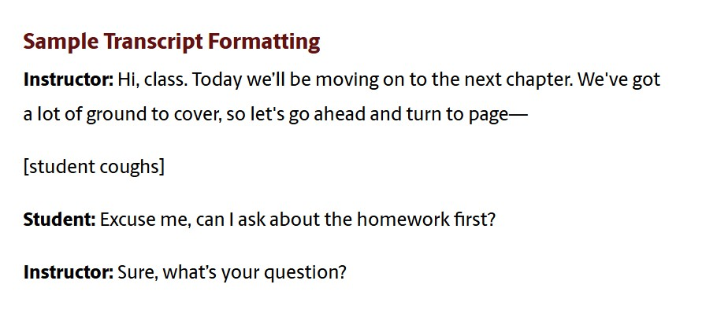
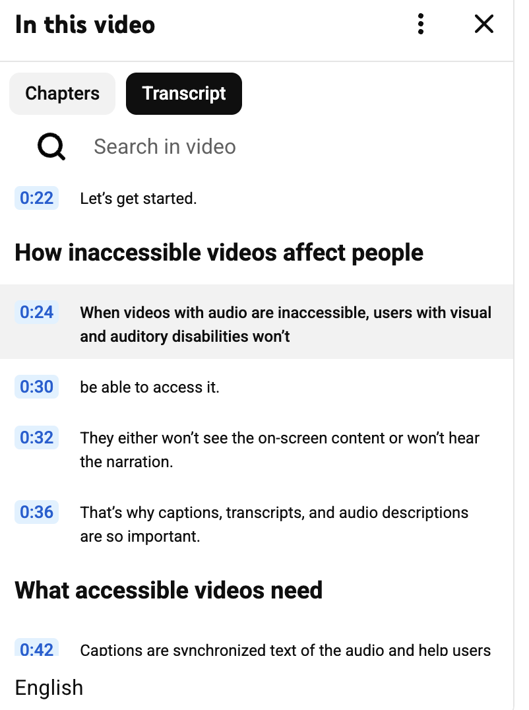

A transcript is the written record of the spoken content of a video or audio file. This alternative allows people with varying abilities to interact with the media and receive key information. There are 2 main types of transcripts: basic transcripts and interactive transcripts. Both kinds of transcripts have different uses that can benefit different audiences.
Basic transcripts provide a text format of audio to create a more accessible experience. By converting audio content into written content, designers can make sure people who have hearing issues or can’t currently listen to the audio can still engage with the content. Consider a podcast or speech. Have you ever watched a podcast or speech online and wanted a written account of the content covered?
Basic transcripts differ from other accessible features, such as

Image from University of South Carolina, Digital Accessibility
However, basic transcripts are not the only format of transcript that can be included to create the most accessible format, depending on the content you are creating.
In an interactive transcript, the text is synchronized with the video and highlights the text as it lines up with the audio. Interactive transcripts provide users with more agency to click through the video at their leisure and are often made searchable for users to find specific information.
Consider a YouTube video. Have you ever clicked on the transcript option and scrolled through to find a specific point in the video? When you click the timestamp of the moment you are looking for, YouTube takes you directly to this section of the video. Software such as ClipChamp offer those making a video to generate an interactive transcription of their content.

Image from "Easy way to create accessible videos with audio"
Interactive transcripts pair well with video and are primarily used for this format. However, interactive transcripts are not always necessary, and the format of the transcript is entirely dependent on the content itself. In general, including some form of transcript is required for video and audio content to meet the requirements of the Web Content Accessibility Guidelines (WCAG).